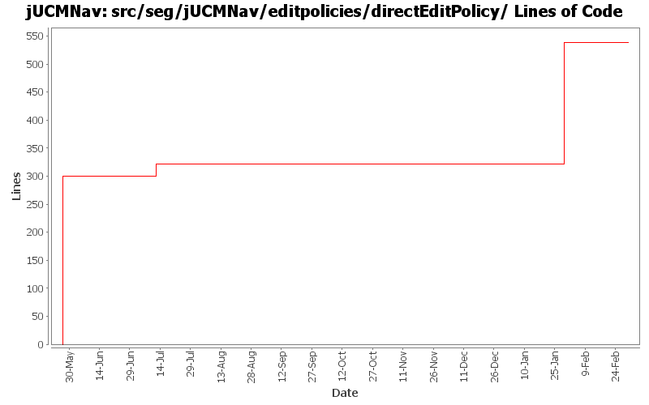

Summary Period: 2005-05-27 to 2006-03-02
[root]/src/seg/jUCMNav/editpolicies/directEditPolicy

Total Lines Of Code:
538 (2006-03-31 18:01)
| Author | Changes | Lines of Code | Lines per Change |
|---|---|---|---|
| Totals | 17 (100.0%) | 538 (100.0%) | 31.6 |
| jkealey | 8 (47.1%) | 322 (59.9%) | 40.2 |
| jfroy | 6 (35.3%) | 216 (40.1%) | 36.0 |
| jpdaigle | 2 (11.8%) | 0 (0.0%) | 0.0 |
| etremblay | 1 (5.9%) | 0 (0.0%) | 0.0 |
Fix the URNlink to support multiple links type. Modification of the links display in UCM
0 lines of code changed in:
Merge of GRL branch with the main trunk
216 lines of code changed in:
new feature: use pathtool/fork/join from palette on fork/join and a new branch will be added.
fixed a bug introduced during cleanup in LabelEditPart.
cleaned up seg.jUCMNav.editpolicies.* and wrote javadoc
22 lines of code changed in:
A few tweaks / cleanups. This will also serve as build test and setup test for e31 on my laptop.
0 lines of code changed in:
JP: Mega commit! Fixed all 120 javadoc warnings on public members, and made the build script a tiny bit less verbose.
Added meaningful javadoc location where possible.
0 lines of code changed in:
Internationalization of all the strings.
0 lines of code changed in:
bug 271 - direct edit now beautiful even at 400%
0 lines of code changed in:
attempt to fix naming conflicts between directEdit and directedit.
300 lines of code changed in:
Generated by StatCVS 0.2.4